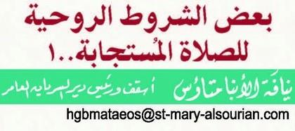

30 القدس الروح جاء ذلك بعد ثم فداء وحدث تجسد حدث و فعل :الفعلين تأخذوا وانتم فى التقديس وفعل التطهبر بالروح الدهنة وسر المعمودية سر )اسرار ( سرين يهيج ال وكيف هائج عدوكم ، هائج عدوكم ولكن .القدس نصركم قد و يهيج ال كيف و ،يده من الرب صكمّلخ قد و .عليه الرب .القدس الروح أعطانا والذى فدانا الذى للا اسم مبارك امين
St. Markus · 2023 · العربية
بعض الشروط الروحية للصالة المستجابة-
Ausgabe 2 · Seite 30
